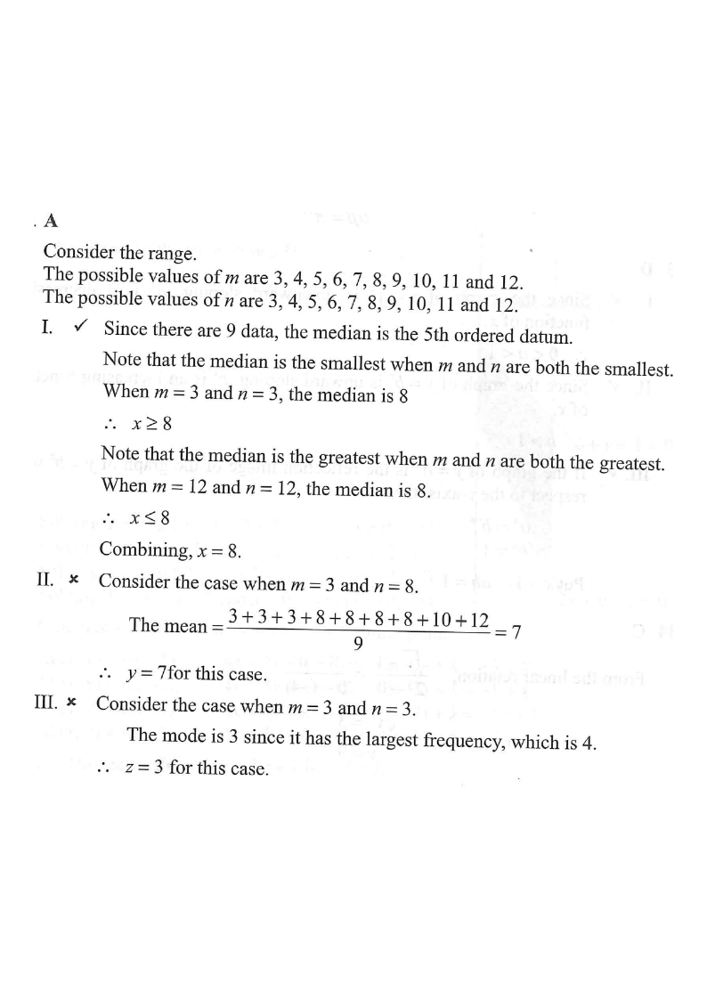

Q Question Multiple Choice
Consider the following integers:
3 3 8 8 8 10 12 \(m\) \(n\)
Let \(x\), \(y\) and \(z\) be the median, the mean and the mode of the above integers respectively. If the range of the above integers is \(9\), which of the following must be true?
I. \(x = 8\)
II. \(y = 8\)
III. \(z = 8\)
A. I only B. II only C. I and III only D. II and III only
(The correct option is D — but the reasoning below shows why each statement must or must not hold.)

a Part (a) — Constraining \(m\) and \(n\) using the range Setup
The range of the nine integers is \(9\). The fixed numbers are \(3,3,8,8,8,10,12\). Let us first work out exactly which values \(m\) and \(n\) may take.
Among the nine integers, the smallest fixed value is \(3\) and the largest fixed value is \(12\). So without \(m,n\), the range of the fixed values is \(12-3=9\).
If we add \(m\) and \(n\), the overall minimum and maximum can change only if \(m\) or \(n\) falls outside \([3,12]\). But all integers must keep the range at \(9\), so the overall minimum must be \(3\) and the overall maximum must be \(12\).
Therefore \(3 \le m \le 12\) and \(3 \le n \le 12\). Since \(m,n\) are integers:
\[ m,n \in \{3,4,5,6,7,8,9,10,11,12\}. \]Also, the range condition forces \(\min = 3\) and \(\max = 12\):
\[ \min(\{3,3,8,8,8,10,12,m,n\}) = 3,\qquad \max(\{3,3,8,8,8,10,12,m,n\}) = 12. \]b Part (b) — Test statement I: is the median always \(8\)?
There are \(9\) data values, so the median is the \(\dfrac{9+1}{2} = 5^{\text{th}}\) value in ascending order.
We want to know whether the 5th ordered value is always \(8\).
Smallest possible median (case \(m=n=3\)):
\[ 3,3,3,3,8,8,8,10,12 \]The 5th value is \(8\), so the median is \(8\) in this smallest case.
Largest possible median (case \(m=n=12\)):
\[ 3,3,8,8,8,10,12,12,12 \]The 5th value is again \(8\). Since the 5th ordered value stays at \(8\) for all valid \(m,n\), we always get:
c Part (c) — Test statement II: is the mean always \(8\)?
The sum of the seven fixed integers is
\[ 3+3+8+8+8+10+12 = 52. \]So the mean of the nine integers is
\[ y = \frac{52 + m + n}{9}. \]Take the valid case \(m = 3\) and \(n = 8\):
\[ y = \frac{52 + 3 + 8}{9} = \frac{63}{9} = 7 \ne 8. \]So the mean is not necessarily \(8\). Statement II is false.
d Part (d) — Test statement III: is the mode always \(8\)?
In the original list \(3,3,8,8,8,10,12\), the number \(8\) appears \(3\) times, which is the highest frequency so far.
Adding \(m\) and \(n\) can change the mode. We need to test whether \(z = 8\) is guaranteed.
Take \(m = 3\) and \(n = 3\) (both allowed since \(3 \le m,n \le 12\)):
\[ 3,3,3,3,8,8,8,10,12 \]Now \(3\) appears \(4\) times but \(8\) appears only \(3\) times. So the mode is \(3\), not \(8\).
Summary & Final Answer
- From the range condition: \(3 \le m \le 12\) and \(3 \le n \le 12\).
- Statement I — median \(x\): the \(5^{\text{th}}\) ordered value is always \(8\), so \(x = 8\) is true.
- Statement II — mean \(y\): for \((m,n) = (3,8)\), \(y = \dfrac{63}{9} = 7 \ne 8\), so \(y = 8\) is false.
- Statement III — mode \(z\): for \((m,n) = (3,3)\), the mode is \(3\), so \(z = 8\) is false.
- Only Statement I must be true → the correct option is A. I only.
Note: the printed answer key on the source page marks D, but the reasoning above (and the standard solution to 2020MC#30) shows that only I is forced — hence option A. The key idea tested is that "must be true" statements are destroyed by a single valid counter-example.